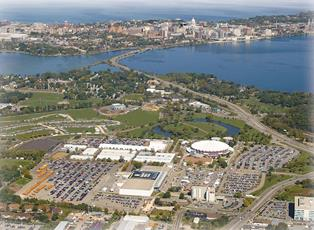

The Bus Stops Here: For a Future Intercity Bus Terminal at the Alliant Energy
Center
August 18,2017

Dane County and the City of Madison’s proposed $250 million redevelopment of the Alliant Energy Center’s south side campus should incorporate an intercity bus terminal. Construction of a multimodal terminal as part of this reimagined gateway to Madison will simultaneously satisfy important transportation needs, make our community more equitable, foster economic development and move us towards environmental sustainability.
Since 2009, people traveling to and from such places as Minneapolis, Milwaukee, and Chicago on the Jefferson, Badger, Greyhound, Lamers and Van Galder intercity bus lines have lacked basic terminal amenities, including a secure, comfortable place to sit, a schedule, the ability to get something to eat, or access to bathroom facilities. Instead, day and night, travelers wait for their bus by sitting in idling cars or standing outdoors, even in Wisconsin’s severe weather.
In a college town, where numerous young, healthy, middle-class students regularly take the bus, many forget that bus passengers are disproportionally less affluent; many forget the difficulties travel poses for the elderly, sick, or disabled.
At our county owned airport, we take for granted a secure, climate controlled place to sit and rest. It would be unthinkable — laughable — to suggest that travelers flying into and out of Madison wait somewhere that lacked a bathroom. Not so for those taking a bus out of town.
An intercity bus terminal helps to remedy this inequity. Logically placed with quick access to the Beltline, John Nolen Drive and eventually the nearby train tracks, a multimodal terminal at the Alliant Energy Center will provide the basic amenities that serve as a welcome to the city for bus riders just as they do for fliers.
A secure, comfortable, and easily accessible terminal also generates immediate economic benefits. An on-site terminal provides out-of-town convention and concert goers with a simple, direct, and car free route to Alliant Energy Center and Coliseum events — and they might arrive with more spending money than if they had flown.
Travelers to and from Madison become customers for the restaurants, shops, and hotels projected to be built as part of the campus redevelopment. Appealing terminal shops and services become magnets for non-traveling clientele from the city, stimulating growth in the community.
An iconic terminal will familiarize all with the pride we take in our adjacent, diverse neighborhoods, beyond the wellknown lakeshore, downtown, and Monona Convention Center.
Further, increased local bus service to the new Alliant terminal to meet travelers’ needs means more equitable bus service for Madison’s south side — thus providing the community better access to the city’s schools, jobs, and services, and savings on car related travel expenses. The city as a whole also benefits from the resulting reduced traffic congestion and faster travel times.
An intercity bus terminal at the Alliant signals Madison and Dane County’s commitment to environmental sustainability. Located approximately the same distance from the Capitol as the Barrymore Theater and Union South, the Alliant Energy Center is not similarly, densely developed, but rather covered with one of the largest surface parking lots in the county, boasting over 5,600 stalls.
Dedicating this valuable land to polluting automobiles, rather than a small portion of it to a much more environmentally friendly way to travel, actually interferes with access to the Alliant as Beltline traffic backs up along John Nolan Drive waiting to enter. Successful development of the Alliant campus will only exacerbate this problem.
Forward thinking government planners and private developers will see the social, economic, and environmental advantages offered by a multimodal station. They will recognize the opportunities this public transportation project offers as part of a new, greener development model for the south side.
The reader might naturally ask whether many of the benefits of an intercity bus station will happen regardless of where the station is built. Or whether a station shouldn⎺t be built in a more central location downtown. The answers are “of course”.
Madison will still need a second terminal near the university to provide service to downtown residents and the large number of carless students. A city Madison’s size should have more than a single terminal for intercity buses.
In fact, we already have an inadequate, two-site system for drop-off and pick-up: at the Dutch Mill parking lot and at various, shifting downtown curbs. It is a mistake to place different locations in competition with each other.
Practically speaking, placing an intercity bus terminal near the Beltline at the Alliant provides an early exit point for the many travelers not headed for a downtown Madison location, including some who currently disembark at the Dutch Mill parking lot.
There is talk that in 2018 a “discussion” will address the possibility of building an intercity bus terminal at the Lake St. parking lot — this could be a good spot for a second terminal. However, the redevelopment of the Alliant Energy Center provides a window of opportunity for comprehensive planning that addresses the issues of equity, economics, and environment noted above and favors the creation of a multimodal intercity bus terminal on the south side.